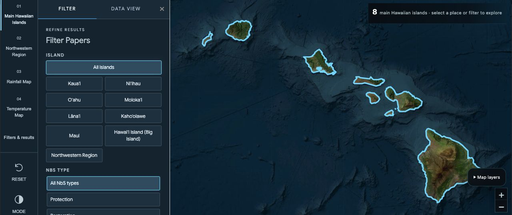
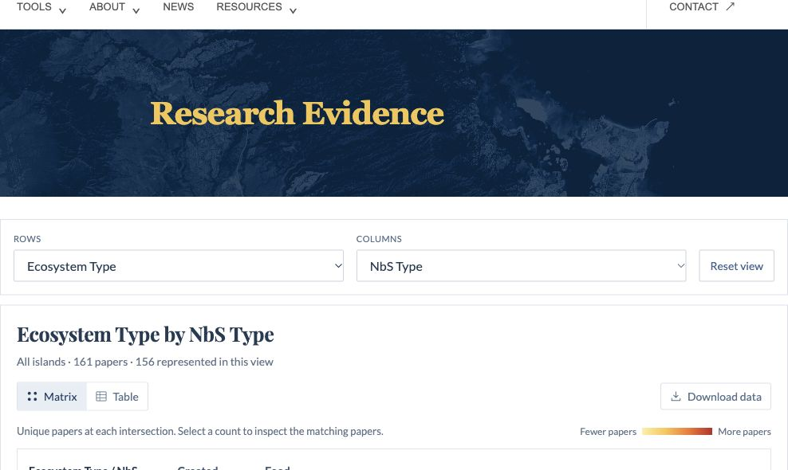
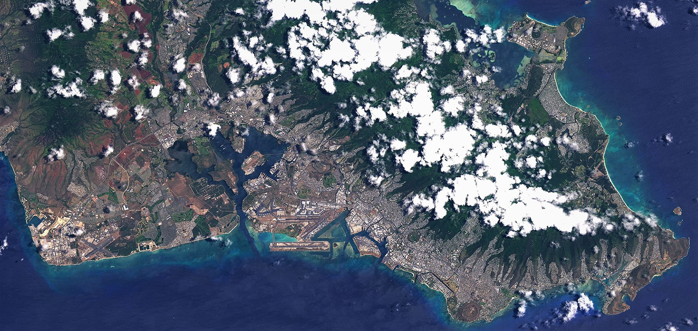
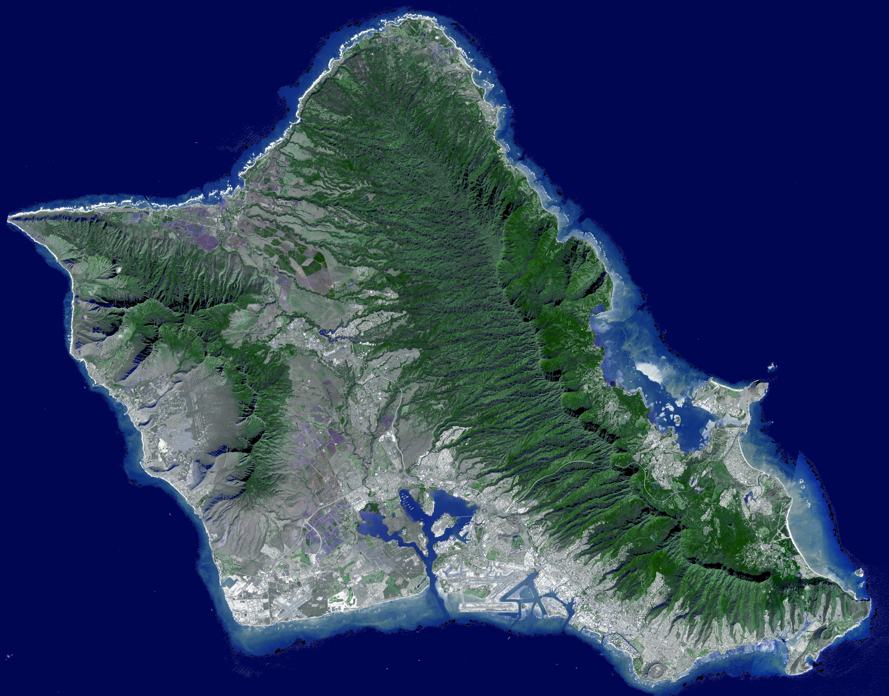
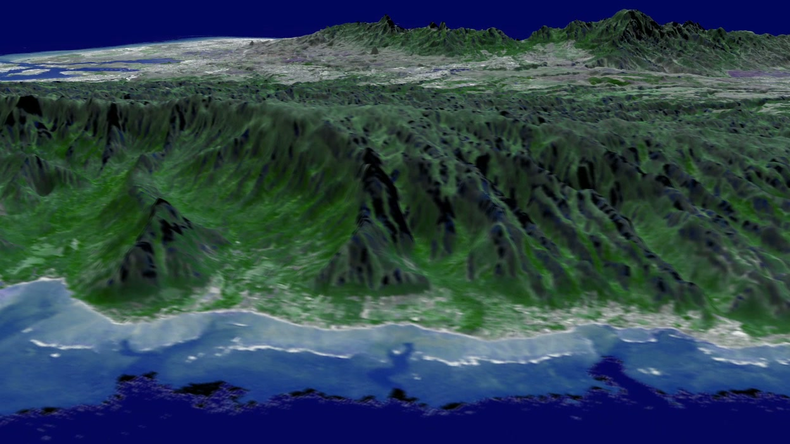

Case Studies Explorer
Explore Hawaiʻi’s NbS research by place, intervention, and ecosystem.

Case Study Map
Browse research across the Hawaiian Islands and open the studies connected to each place.

Research Evidence
Compare NbS types, ecosystems, and publication years, then inspect the papers behind each count.

Restoration
Explore research classified as restoration in the case-study collection.

Protection
Explore studies of protecting and conserving ecosystems across Hawaiʻi.

Management
Find research on managing ecosystems and nature-based interventions.
Food Production
Browse studies classified under food production, including agricultural and aquaculture systems.
Created Habitats
Explore studies classified as created habitats in the existing NbS taxonomy.